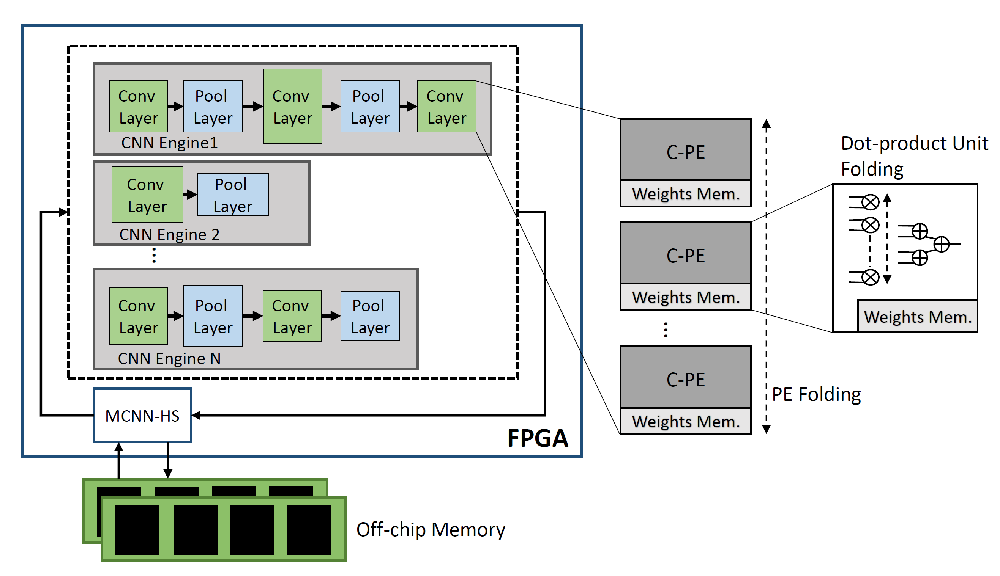
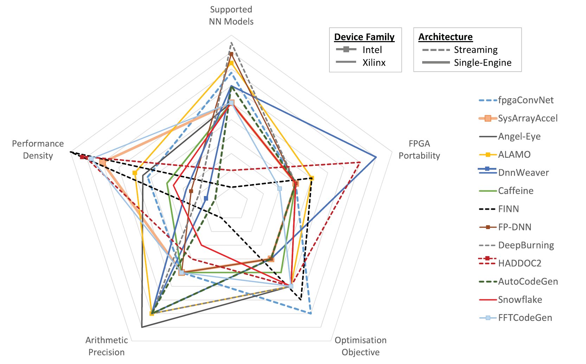
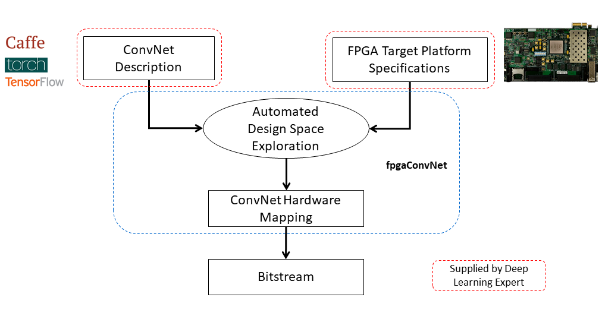
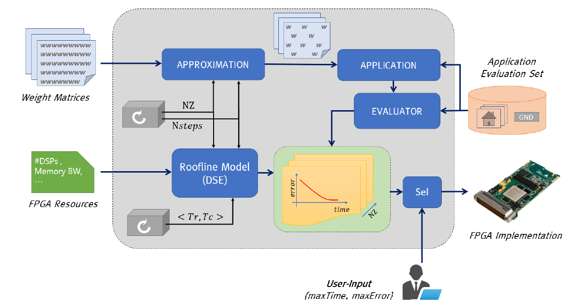
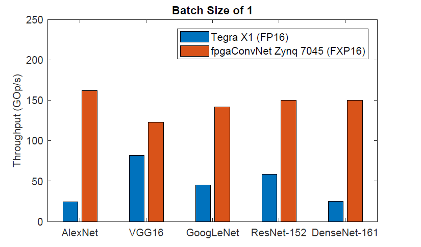
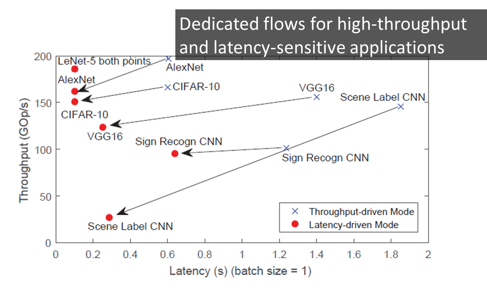

My research interests include architectures and methodologies for mapping Machine Learning algorithms to high-performance, energy-efficient reconfigurable FPGA-based systems and making FPGAs more accessible to Artificial Intelligence practitioners. Currently, my research focuses on methodologies for the principled and automated mapping of Deep Learning algorithms on FPGA-based platforms, including Convolutional Neural Networks and Recurrent Neural Networks.
My PhD is sponsored by the Engineering and Physical Sciences Research Council (EPSRC).
Supervisor: Dr. Christos Bouganis
Web: http://cas.ee.ic.ac.uk/people/ccb98
During my PhD, I developed fpgaConvNet, a framework for the automated mapping of Convolutional Neural Networks on FPGAs, with details at the following link (http://cas.ee.ic.ac.uk/people/sv1310/fpgaConvNet.html).
|  |
f-CNNx: Enabling emerging multi-CNN applications
In the construction of complex AI systems, CNN models are used as building blocks of a larger system. In this respect, multi-CNN systems have emerged, employing several models, each one trained for a different subtask. Nevertheless, deploying multiple models on a target platform poses a number of challenges. From a resource allocation perspective, with each model targeting a different task, the performance constraints, such as required throughput and latency, vary accordingly. Instead of being model-agnostic, this property requires the design of an architecture that captures and reflects the performance requirements of each model. Moreover, in resource-constrained setups, multiple CNNs compete for the same pool of resources and hence resource allocation between models becomes a critical factor. f-CNNx is a toolflow which addresses the mapping of multiple CNNs on a target FPGA platform while meeting the required performance for each model. Starting from a set of pretrained models, f-CNNx explores a wide range of resource and bandwidth allocations and incorporates the application-level importance of each model by means of multiobjective cost functions to guide the design space exploration to the optimum hardware design.
Stylianos I. Venieris and Christos-Savvas Bouganis |
|  |
Landscape of CNN-to-FPGA toolflows and future directions
To drive the experimentation and development of novel deep learning models, both industrial and academic institutions have released software frameworks, optimised for training and deploying deep learning models with high compute performance. Currently, frameworks such as Caffe2, PyTorch and CNTK achieve high processing speed by primarily targeting power-hungry CPUs and GPUs. Recently, FPGAs have emerged as a potential alternative platform that can reduce significantly power consumption cost while meeting the compute requirements of modern deep learning systems. In this project, we survey the landscape of toolflows which automate the mapping of the CNN inference stage to FPGA-based platforms. From a deep learning scientist perspective, we conduct a study over the supported deep learning models, including DNNs, CNNs and LSTMs, the achieved processing speed and the applicability of each toolflow on specific deep learning applications, from latency-critical mobile systems to high-throughput cloud services. From a computer engineering perspective, we present a detailed analysis of the architectural choices, design space exploration methods and implementation optimisations of the existing tools, together with insightful discussions. With an eye to the future of FPGA-based deep learning, we present a set of promising areas of research that can bridge the gap between FPGAs and deep learning practitioners and enable FPGAs to provide the necessary compute infrastructure that can drive future deep learning algorithmic innovations.
To encourage the meaningful and fair comparison between toolflows, we present a uniform evaluation methodology that includes performance metrics
and a benchmark suite that aims to assess the strengths and limitations of each toolflow.
Read more.
Stylianos I. Venieris, Alexandros Kouris and Christos-Savvas Bouganis |
|  |
fpgaConvNet: An automated CNN-to-FPGA toolflow
Convolutional Neural Networks (ConvNets/CNNs) are a powerful Deep Learning model which has demonstrated state-of-the-art accuracy in numerous AI tasks, from object detections to neural image captioning. In this context, FPGAs constitute a promising platform for the deployment of ConvNets which can satisfy the demanding performance needs and power constraints posed by emerging applications. Nevertheless, the effective mapping of ConvNets on FPGAs requires Deep Learning practitioners to have expertise in hardware design and familiarity with the esoteric FPGA development toolchains, and therefore poses a significant barrier. fpgaConvNet is a framework that automates the mapping of ConvNets onto reconfigurable FPGA-based platforms. Starting from a high-level description of a ConvNet model, fpgaConvNet considers both the input model's workload and the application-level performance needs, including throughput, latency and multiobjective criteria, in order to generate optimised streaming accelerators tailored for the target FPGA. fpgaConvNet is being developed by the Intelligent Digital Systems Lab (iDSL).
Stylianos I. Venieris and Christos-Savvas Bouganis |
|  |
Approximate FPGA-based LSTMs under limited computation time
Long Short-Term Memory (LSTM) networks have demonstrated state-of-the-art accuracy in several pattern recognition tasks, with the prominence of Natural Language Processing (NLP) and speech recognition. Nevertheless, as LSTM models increase in complexity and sophistication, so do their computational and memory requirements. Emerging latency-sensitive applications including mobile robots and autonomous vehicles often operate under stringent computation time constraints, where a decision has to be made in real-time. To address this problem, we developed an approximate computing scheme which enables LSTMs to increase their accuracy as a function of the computation time budget, together with an FPGA-based architecture for the high-performance deployment of the approximate LSTMs. By targeting the real-life Neural Image Caption (NIC) model developed by Google, the proposed framework requires 6.65x less time to achieve the same application-level accuracy compared to a baseline implementation, while achieving an average of 25x higher accuracy under the same computation time constraints. This is the first work in the literature to address the deployment of LSTMs under computation time constraints.
Michalis Rizakis, Stylianos I. Venieris, Alexandros Kouris and Christos-Savvas Bouganis |
|  |
Energy-efficient CNN mappings on embedded FPGAs
The deployment of large CNNs on mobile and embedded settings is a challenging task due to the strict throughput, latency and power requirements. With conventional parallel architectures, such as embedded CPUs, GPUs and DSPs, reaching the limit of satisfying these constraints, specialised hardware solutions are becoming a necessity. In this work, we present an automated toolflow that maps diverse CNNs, with both regular and irregular structure, to optimised FPGA-based designs, and demonstrate that the generated designs deliver up to 6.65x higher performance than highly optimised embedded GPU designs for the same power budget in embedded settings.
Stylianos I. Venieris and Christos-Savvas Bouganis |
|  |
Latency-driven design for FPGA-based CNNs
The majority of existing CNN implementations, targeting CPUs, GPUs and FPGAs, are optimised with high throughput as the primary objective. Emerging new AI systems, from self-driving cars and UAVs to low response-time, cloud-based analytics services, require the very low-latency execution of several CNN-based tasks without the processing of inputs in batches. To meet these requirements, we place latency at the centre of optimisation and generate latency-optimised hardware designs for the target CNN-FPGA pairs. This is achieved by introducing a latency-driven methodology, which enables the high-performance execution of CNNs without the need for batch processing. The developed approach enables the expansion of the architectural design space, to meet the performance needs of modern latency-sensitive applications and delivers up to 73.54x and 5.61x latency improvements over throughput-optimised designs on AlexNet and VGG-16 respectively.
Stylianos I. Venieris and Christos-Savvas Bouganis |
Stylianos I. Venieris and Christos-Savvas Bouganis
fpgaConvNet: Mapping Regular and Irregular Convolutional Neural Networks on FPGAs,
IEEE Transactions on Neural Networks and Learning Systems, 2018. [bibtex | link]
Stylianos I. Venieris, Alexandros Kouris and Christos-Savvas Bouganis
Toolflows for Mapping Convolutional Neural Networks on FPGAs: A Survey and Future Directions,
ACM Computing Surveys, 2018. [bibtex | link]
Stylianos I. Venieris and Christos-Savvas Bouganis
f-CNNx: A Toolflow for Mapping Multiple Convolutional Neural Networks on FPGAs,
28th International Conference on Field Programmable Logic and Applications (FPL), 2018. [bibtex | preprint | link]
Alexandros Kouris, Stylianos I. Venieris and Christos-Savvas Bouganis
CascadeCNN: Pushing the Performance Limits of Quantisation in Convolutional Neural Networks,
28th International Conference on Field Programmable Logic and Applications (FPL), 2018. [bibtex | preprint | link]
Stylianos I. Venieris, Alexandros Kouris and Christos-Savvas Bouganis
Deploying Deep Neural Networks in the Embedded Space,
2nd International Workshop on Embedded and Mobile Deep Learning (EMDL), MobiSys, 2018. [link | slides]
Alexandros Kouris, Stylianos I. Venieris and Christos-Savvas Bouganis
CascadeCNN: Pushing the performance limits of quantisation,
SysML, 2018. [bibtex | link]
Michalis Rizakis, Stylianos I. Venieris, Alexandros Kouris and Christos-Savvas Bouganis
Approximate FPGA-based LSTMs under Computation Time Constraints,
14th International Symposium on Applied Reconfigurable Computing (ARC), 2018. (Best paper nominee) [bibtex | link]
Christos Kyrkou, George Plastiras, Stylianos I. Venieris, Theocharis Theocharides and Christos-Savvas Bouganis
DroNet: Efficient Convolutional Neural Network Detector for Real-Time UAV Applications,
International Conference on Design, Automation and Test in Europe (DATE), 2018. [bibtex |
link]
Stylianos I. Venieris and Christos-Savvas Bouganis
fpgaConvNet: A Toolflow for Mapping Diverse Convolutional Neural Networks on Embedded FPGAs,
Workshop on Machine Learning on the Phone and other Consumer Devices (MLPCD), NIPS, 2017. [bibtex |
link | slides]
Stylianos I. Venieris and Christos-Savvas Bouganis
Latency-Driven Design for FPGA-based Convolutional Neural Networks,
27th International Conference on Field Programmable Logic and Applications (FPL), 2017. [bibtex | link]
Stylianos I. Venieris and Christos-Savvas Bouganis
fpgaConvNet: Automated Mapping of Convolutional Neural Networks on FPGAs,
ACM/SIGDA International Symposium on Field-Programmable Gate Arrays (FPGA), 2017. [poster | bibtex |
link]
Stylianos I. Venieris and Christos-Savvas Bouganis
fpgaConvNet: A Framework for Mapping Convolutional Neural Networks on FPGAs,
IEEE 24th Annual International Symposium on Field-Programmable Custom Computing Machines (FCCM), 2016. [slides |
bibtex |
link | benchmarks]
Stylianos I. Venieris, Grigorios Mingas and Christos-Savvas Bouganis
Towards Heterogeneous Solvers for Large-Scale Linear Systems,
25th International Conference on Field Programmable Logic and Applications (FPL), 2015. [slides |
bibtex | link]